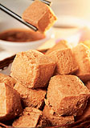

素食、断食、偏食、守午
冯冯
迷失在未来 / 誊录
有人向我问难：有人说吃素有多少多少好处，延年益寿，百病不侵，未免太夸张了吧？为什么吃素的人也有人患癌症呢？为什么吃素的修行人也有患高血压、糖尿病、肾脏病呢？为什么也有很多吃素者患上营养不良？又有人问“断食”、“禁食”可以治百病，也可以成道吗？
我不是医师，也不是营养学家，没有资格与足够的学识提供满意的答案，不过，我可以姑妄以个人的浅识来分析一下。根据一般西方医学与营养报告，素食者患高血压、心脏病、糖尿病、肾脏病的比率，是较肉食者为低，素食者患癌症的也比肉食者低得多，这已是一般现代人的常识，至于详细统计数字，各处报告文献均有登载，俯摭即是，资料也有差异，倒没说是“百病不侵”，只说是对于某些疾病抵抗力较肉食者为强，反过来说，素食者也有弱点。
素食者倘若“偏食”，只偏吃某些种类的素食，难免就会形成某些营养不良。举例说，某些寺院提倡“苦行”，“过午不食”、“食不可饱”，一天只在午前吃一顿饭，米饭是隔夜甚至多日的剩饭，菜是几片萎黄的白菜叶，一些酱菜，连豆腐都没有……比叫化还不如，以此为“苦行”标榜，叫人饿着肚子到次日中午，这样不合理的素食“苦行”，说是“修行”，净化身心，这样修法，那么非洲索马利亚，卢旺达那些饥民老早都成了“佛”啦！这样挨饿下去，把一座寺院变成是集中营的囚俘，饿到皮包骨，肋骨暴露，有如活骷髅，怎么不百病丛生？怎么不沦入饿鬼道？成什么佛？休说成佛了，就是有心弘教利众，又哪来的健康体力去干？还不是躺在地上病苦受罪等死罢了，偏偏就有这样的寺院，以“绝食”为标榜，还说：挨不了苦的别进来！
“过午不食”，从现代人保健来看，是自找胃病！因为，你过午不食，道心可嘉极了，但是阁下的胃，到了时间，会自动分泌胃酸，若无食物咽下，胃酸就侵蚀你的胃壁，引起胃痛，渐渐形成“胃溃疡” ，最后是“胃穿孔”，以“断食”为修苦行的人，多数患有胃溃疡！这是自找的，你再吃什么素也没用。
断食式的苦行无益，佛说七年苦行之后已经醒悟此一点，所以衪放弃了瑜伽式断食苦行，而恢复正常饭食，保健却病。有了强健的休憩、正常的健康，才可负担起救世利众的佛业，何必徒作尸居余气般半死不活的骷髅？于世何益？“断食”或“绝食”挨饿时久，会引起恶性营养不良，导致严重贫血，脑细胞因贫血而功能故障，出视幻觉，就有人见到“佛”，见到“菩萨”，见到“鬼神”，非洲饿民在弥留一刻幻见的断不会是阿弥驼佛，可能见到他们平素拜祀的鬼神形象，信耶稣的饿民饿到晕眩，也不会见到佛，所见的必是耶稣，辟谷绝食的道家修仙人，见到的多半是张果老或吕洞宾，甚至何仙姑……各文化宗教背景不同的人，各有其深入了潜意识的偶像，一旦脑子失效六识陷入混乱，潜意识中的印象就出现成为幻觉。
印度瑜伽主张断食绝食作为修行，以为可得神通，藏区不少人攀登喜马拉雅山高峰，忍受烈日或冰雪饥寒，往往见到一向向往的神佛，那是真的佛菩萨来接引吗？拆穿了只不过是脑中缺氧与恶性贫血，恶性营养不良所引起的幻觉而已，藏人见到的自然是藏式绘画的佛像，汉人见到的就难免有关公与济公和尚，假如你叫一个老外去，他若见到关公济公或毗卢遮那佛才奇怪！
西方医学报告刊物，早已有多次报导，饥饿至极会引发幻觉，缺氧也会引发幻觉，极度疲劳也会引发幻觉，极度寒冷或极度高热亦然，并非我杜撰，我推断从古以来，不少修行人是陷入了自我欺骗自己的苦行断食的陷阱而误以为幻觉是真正的佛菩萨来接引，从另一个角度来看，也许当初就是有些绝顶聪明的祖师，明知极端的“苦行”“断食”会产生幻觉，就此传授下来叫人上当吧？（哈哈哈！想到此点，自感是愚者一得，开心之至！）一经点破，您就别醉心于什么“断食”“绝食”那一套自找苦吃的苦行啦！假如您还是笨到去喝别人的尿或马屎，那是另一话题，今次暂时不谈。
当然，短时间的“断食”的好处不可否认，断食几小时甚至半天，可让肠胃休息一下，可别走极端，连水也禁喝，除非您已是修到了已经可以控制内脏功能来去自如。
有些人吃素食，吃的是：油炸素腿，油闷素鸡，素烤鸭，素烤肉，素熏鱼，素蟹肉，素狮子头，素肉酱，素香肠……色香味俱臻上乘，可以乱真的，心中仍有“吃肉”之欲，姑是勿论，单拿那些调味品来说，味精，香料，辛辣，沙茶，咖喱，加上防腐剂的化学毒素微量积少成多，常吃这些美味却极不卫生的素食，虽然不是荤，吃下去的后果害处，却不比肉食为少！
因为油炸所用的万年油，高温炸久了，会分解出毒素来，油炸食品，虽是素食，其饱和脂肪与肉食也就差不多，引起高血压、高胆醇、心脏病、中风、糖尿，等等疾病的机会也就不亚于肉食，天天吃深炸薯条的西方社会儿童，患上过早的高血压与连带疾病者，比比皆是，造成了不少超级小胖子！深炸久炸的油炸食品，引起消化不良，更自不待言，炸焦炸糊了的食品，都可能含有致癌物质，长期吃素的人，出家或在家人，都有不少患癌症的，原因很多，不能一概而论，但是吃太多油炸油腻素斋，实非保健之道；很不幸地，虔诚的信徒，老是向法师供养油炸素食油，油腻腻的，过于油腻，不知者不罪，知者就须避免啊！法师也不必碍于情面照单全收，也得教教人少吃油炸啊！
爱吃深炸食品，是一般人的通病，可能素食者较荤食者尤甚，认为素食太清淡，恐怕是一种错误观念，嘴馋才是主因。自恃素食全都无害也是一种心理误差，殊不知深炸素食与烤糊烧焦的任何食品，管它是荤是素，都有致癌物质，同样有害！别以为只是吃素就有益，得看你吃什么素！也别以为吃素就百病不侵，寿与天齐！更别以为吃素就必可获神佛庇佑，光吃素，若无善业，不积善德，也就无善报，若说光吃素就可成佛，那么牛、羊、鹿、马都是吃草的，怎么都不成佛？鹅、雁也是素食动物，怎么也不成佛？猴子也是吃素的居多，为什么不成佛？（猩猩都不是素食者，别误认他们吃素，他们会得撕吃猴子或人类。）
人类若求成佛，不能单靠吃素就算是修行，吃素的动机源于戒杀生，列为戒守之一，是修行的一环，但决非全部！若不行善，光吃素也就与牛、羊吃草无异，谈不到是修行，若不守其他戒律，又不去求证开悟，而光是盲从吃素，拿也只不过是变成一种吃素的动物而已。吃健康素食，才可保健延年益寿，滥吃油炸素食，超量素食，毫无益处！
说到“超食”就忆及一个故事，美国某寺，一向严行守午，过了中午就禁食，于是在唯一顿午饭时光，那些锱素都尽量吃饱一些，在家人可以下午或晚上偷吃买来的零食，出家人都不能，下午厨房上锁了，谁都不准出进，也无处买吃的，只好挨饿到次日中午。于是，上供之后，人人托钵领饭，都多盛一点，尽量吃饱，以度长夜之饥。其中一位老美比丘，身材魁梧高大，食量也成正比，普通斋钵难供他一饱，又格于守午戒律，他只好端着一只铅制脸盆去领斋，旁人忍不住偷笑，又不好意思笑，都在偷偷扮鬼脸。瞧那情景，真是尴尬！守什么午呀？毫无意义！守出一批胃溃疡病儿来而已！（法师守午，我们偷吃，其乐无穷，妙不可言！）
力主守午者，坚称世尊当年与弟子守午，所以后世弟子必须守午，言之有据。但是失察世尊时代与地理社会背景与今世不同。当时的守午习惯，非自佛教开始，以前老早就有过午不食，因为印度天气太热，居民吃了午餐就睡午觉，下午不做饭，没人供养沿门托钵的比丘，佛陀与弟子不守午也得守。印度人到了傍晚或夜间，天气凉一点，才吃晚饭，那时已入夜，佛陀与弟子众，为守清规，戒止夜出，不能夜行托钵乞食，徒众那时并无火头僧看续厨，夜间不守也得守夜。
背景不同，时代不同，观念不同，现代社会不容许你沿门托钵，求乞在西方社会被视为可耻行为，甚至有些地方视为犯罪？现代社会是工商社会，工作职业消耗脑力体力至钜，你去守午，下午饿到发昏，怎么做工？没精打采，不给“炒鱿鱼”才怪！现代人也不可能有太多的悠闲时间去成天打坐、冥坐，你想在菩提树荫下面冥坐？张开眼睛，花桌素品都老早有人供养在你座下？又一样事是古今中外无异化，人体的本能无份国界、种界，佛陀常年的弟子们，同样会饥饿，同样会有胃酸溃疡，至少也会守午夜守到胃痛，只是佛教所不载而已。
也有人说，守午的另一作用是减弱性欲，因为饱暖思淫欲，饥饿就较少淫念！此一论调，不攻自破！君不见穷人夫妻孩子多？非洲与其他第三世界的饥民生育多？一是因为穷人无处可消遣，唯一的消遣就是制造孩子，又不懂家庭计划去实行避孕节育，另一原因，则会令你大吃一惊，你且坐稳了，别给吓倒，更别晕倒！那就是一人在饥饿时刻，性欲最强！这是很多西方医学的调查报告公认，正与一般观念饱暖思淫欲相反！乍听不合理，肚子饿了怎么会性欲强呢？原来饥饿之际，血压低，脑神经中心的自治能力相对地削弱，无法控制性欲冲动，信不信由你，不妨自己测试一下，是否属实？当然，饱暖也会引起性欲冲动，恐怕饿与饱两个极端都不是好东西！还是“中道”一点为佳，不饥也不饱最好。
还没回答一个问题，怎么那么多素食者患上肾脏病？甚至需换肾？肾病原因很多，种类也多，最常见的是丝球体淤塞、肾炎、肾结石、肾癌，素食者往往因为素食太咸而引起肾病，尤其是老年人，舌头失去味觉，总嫌食品太淡无味，拼命加盐加酱油，过多的钠，加上排不出的钙与废物，尿素结晶，造成肾脏丝球体淤塞，结石、发炎……种种问题。
素食者为什么也会有肝癌？首先我们须明白，肝癌的成因很多，例如感染了病毒引起的肝炎C型，现在医界发现它会发展为肝癌！这就不是素食荤食的问题，而是病毒感染！适当的素食可能提供较佳的抗疫能力，但是任何荤食都不是万能灵丹，也没有一种特效化疗药物可以保证药到病除，主要的力量恐怕仍是人体自己本身的“免疫能力”，适当的菜蔬水果与种子食物所含的营养与微量矿物质，一般情况是又助于免疫力的增加，同时，也不能完全否定了动物性营养的贡献，怎样避免食用杀生取得的动物食品，是一项相当不容易的课题，当然也不能极端到连牛奶也不准饮用，奶酪也不许吃。
至于A型与B型肝炎，很多人是从不洁的食物或餐具感染到病毒而引起的，公共食堂的碗筷匙叉碟子，往往带有由不洁的厨房碗布的细菌与病毒，厨房的切肉刀，砧板，洗碗盆或洗碟机，干碟布，台布，桌缝，往往是病菌与病毒的大本营，任何餐馆工作人员若用抹桌布抹了碗碟给你用，很可能就无意中传进了数以亿计的病菌或病毒给你了，病毒病菌从何而至呢？它们由老鼠，蟑螂，苍蝇等等带来，也从空气降临，不少病毒是从外太空光临地球的。人手的指甲缝内的积垢也隐藏成万的细菌或病毒，一个带菌者打一个大喷嚏，就把成万的细菌病毒散布了开来，不怕你不中特奖！发酵的发霉食物，不论荤素，无不带有病菌或病毒，只是毒素程度深浅各有不同，有些为人体所能忍受或接受，而另一些则不能。
 江浙人士最爱吃油炸臭豆腐，兼有深炸与酵霉两大毒素，把发霉长出灰绿色长毛抹掉的豆腐，放在万年滚油中深炸久炸，臭熏数里街巷，嗜吃者赞为异香扑鼻，畏之者则走避三舍，有人嗅了会头痛若裂，此种奇特食品，自然也是素食呀！但是否有益呢？虽然尚无任何资料可兹指出油炸臭豆腐是致病甚至致癌的来源，但是久炸于万年油所获的毒素与霉菌引起的奇臭，与腐尸气味相似，怎不免令人顿生戒心！就所见江浙人士粗算，患上高血压，心脏病，糖尿，肾病，肠胃癌……等等疾病的比例，似乎比其他地区人士为高，令人怀疑是否与油炸臭豆腐有关，或者是他们吃得太多油炸油腻食品？或者是吃得太多酱瓜酱菜？
东方人士，尤其香港广州人士，患喉癌鼻咽癌的比例，冠于全中国，经医学研究，发现他们嗜吃酵霉食品：咸蛋，皮蛋，咸鱼，咸虾酱，腌蟹，酱瓜，豆腐乳，南乳，其中抽样检查化验发现不少含有致癌物质或病毒，纵然是素食者的调味圣品豆腐乳，也发现有毒的霉菌。
河南乡村喉癌患者特别多，某些村落，喉癌病人比例高达全村百分之九十，几乎是人人自危，联合国卫生代表团实地调查，发现当地人民因为太穷，常年都吃自制的腌菜，是用那看起来无害的高丽菜用盬腌渍存放在土制瓷坛内，供给整年全家吃用，这些腌菜或泡菜，经化验结果显示含有致癌病毒，成为喉癌的主因。从前述数则短例来看，以足以说明素食未必就是无害，得看你吃得是什么菜，你吃深炸的，酵霉的，那就是冒险！
台湾与大陆都受到肝炎侵袭，现在不少医学报告指出罪魁是来自豆板酱的黄曲霉素！爱吃炸酱的人士，患得B型与C型肝炎，乃至肝癌的比率较高。闽台人士患肾脏病的比例较高，可能与嗜吃酱瓜酱菜有关，太咸可又含有霉素或霉菌，吃它还不如吃新鲜的蔬菜吧！
 基本上，多样化的吃素是有助于保健的，其意义远比戒杀为重。事实上，吃素也还是杀生，只不过杀的是植物的生命而非动物的生命，佛教称植物是“无情生”，事实上已经过时，科学早已证明了植物也有情感情绪，也有“痛”感也有痛苦感觉，只是有别于人类，因而人类无法体会植物的感受而已。假如要走极端，那么，连开水也不可喝了，因为水中有无数微生物与细菌，你煮开水就杀死了成亿成万的微生物了！岂非也犯了杀戒？问题是，你若不煮开了水而去喝不洁的生水，就等着拉肚子罢！人真是无奈啊！走极端想下去，真会令人精神分裂！吃素就别扯到戒杀上面去，否则你会食难下咽。把吃素视为保健，这才是最重要的，吃新鲜的，漂净的蔬果素品，才可保健！也并不只是素食就是保健食品！当然，也须注意洗净农药方策安全，否则也会中毒的，假如你又联想到农药杀死了多少千万害虫，你又因此内疚自责，自认是罪孽太深，那么你就精神分裂崩溃了！这不是正信，而是迷信了！
基本上，多样化的吃素是有助于保健的，其意义远比戒杀为重。事实上，吃素也还是杀生，只不过杀的是植物的生命而非动物的生命，佛教称植物是“无情生”，事实上已经过时，科学早已证明了植物也有情感情绪，也有“痛”感也有痛苦感觉，只是有别于人类，因而人类无法体会植物的感受而已。假如要走极端，那么，连开水也不可喝了，因为水中有无数微生物与细菌，你煮开水就杀死了成亿成万的微生物了！岂非也犯了杀戒？问题是，你若不煮开了水而去喝不洁的生水，就等着拉肚子罢！人真是无奈啊！走极端想下去，真会令人精神分裂！吃素就别扯到戒杀上面去，否则你会食难下咽。把吃素视为保健，这才是最重要的，吃新鲜的，漂净的蔬果素品，才可保健！也并不只是素食就是保健食品！当然，也须注意洗净农药方策安全，否则也会中毒的，假如你又联想到农药杀死了多少千万害虫，你又因此内疚自责，自认是罪孽太深，那么你就精神分裂崩溃了！这不是正信，而是迷信了！
原载《佛乘世界》第6期：1997年9月27日